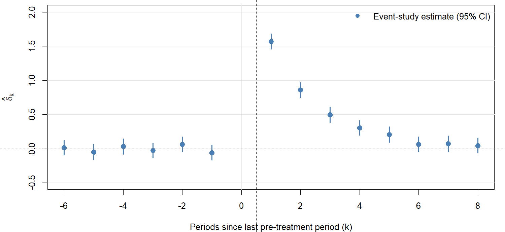
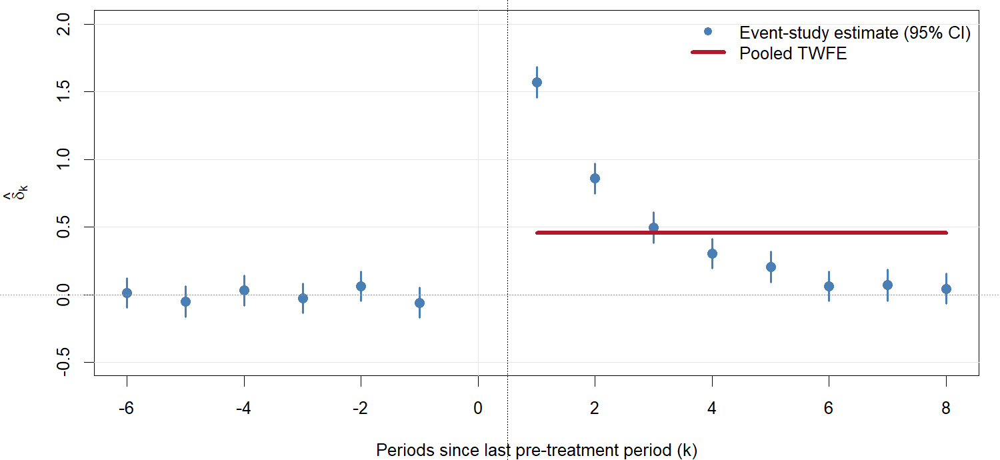
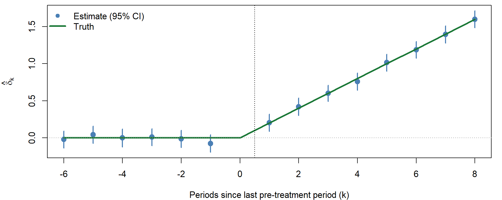
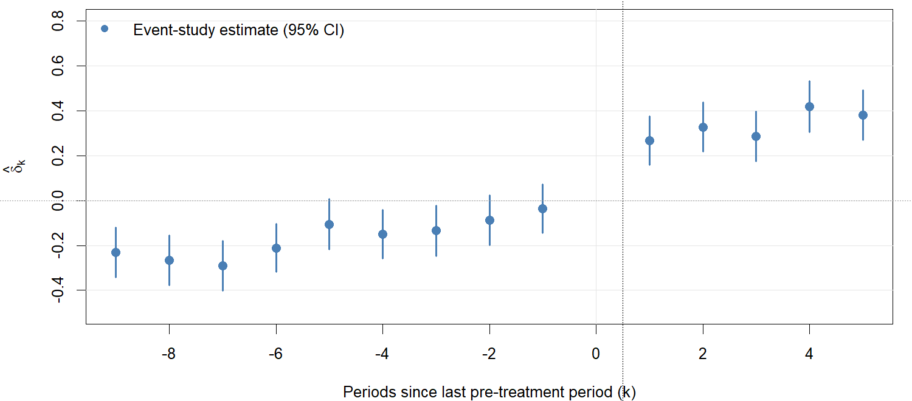
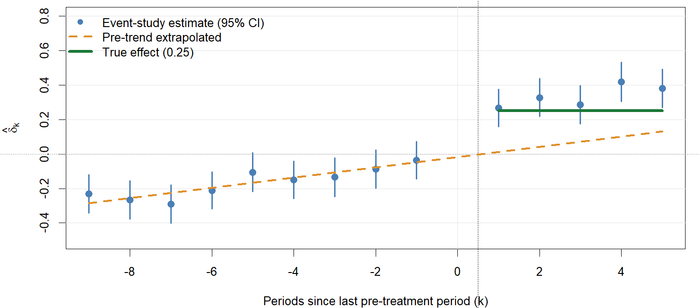
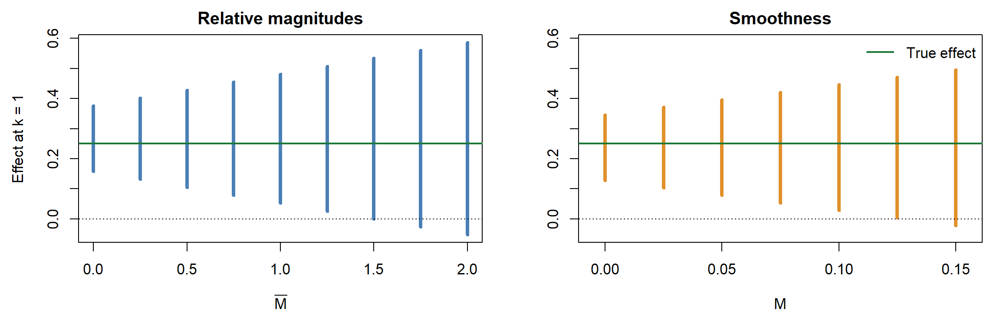

Parallel trends is about counterfactual outcomes for the treated. We can never directly verify what would have happened to the treated group absent treatment.
Parallel pre-trends, when available, lend plausibility but do not guarantee parallel post-treatment trends.
Trend assumptions are sensitive to the scale of the outcome: parallel on levels is not parallel on logs, and the reverse. The functional form needs a justification (Roth et al. 2023).
Two-period DiD: estimation and inference
Standard inference uses cluster-robust standard errors at the level of unit \(i\).
If treatment is assigned at a higher level (for example, states), cluster at that level. The rule of thumb is to cluster at the level at which treatment is independently assigned (Roth et al. 2023).
Few clusters: standard cluster-robust SEs may perform poorly.
Wild cluster bootstrap (Cameron, Gelbach, and Miller 2008).
\(t\)-distribution with \(J - 2\) degrees of freedom (Donald and Lang 2007).
Randomization inference approaches.
Statistical power in DiD (Weiss 2024)
DiD designs often have small effective sample sizes (for example, \(N = 50\) US states).
Weiss (2024) is a simulation study of modern DiD methods. It shows:
Many methods produce confidence intervals that fail to cover at nominal rates.
Block bootstrap can improve coverage.
Power is a serious concern, and large effect sizes are required for detection.
Effective sample size is driven by the number of units, not by sub-units or time periods.
Researchers should conduct power analyses before committing to a DiD design.
Conditional DiD
Conditional parallel trends
Standard parallel trends may be implausible unconditionally but plausible conditional on covariates \(X_i\).
Among units with the same \(X_i\), trends are parallel.
This allows confounders with time-invariant additive effects on the outcome to differ across groups, as long as \(X_i\) captures them.
Controls in the three DiD regressions
Conditional parallel trends says that the trend in untreated outcomes depends on \(X_i\), so covariates must enter interacted with time. In each of the three forms:
The term \(X_i'\gamma_1 \text{Post}_t\) lets covariates shift the trend. It is the term that matters.
The level term \(X_i'\gamma_0\) is kept in the dummy form so that all three give the same \(\hat\delta\). In the TWFE form it is absorbed by \(\alpha_i\), and in the first-difference form it is differenced out.
Conditional DiD: implementation
Three approaches.
Regression adjustment. Add \(X_i\) interacted with time, as on the previous slide. An uninteracted \(X_i\) is absorbed by \(\alpha_i\) in the TWFE form, so it does nothing. This imposes a common slope \(\gamma_1\) for treated and control, which can bias the ATT under heterogeneous effects (Roth et al. 2023, eq. 12).
Doubly robust (Sant’Anna and Zhao 2020). It combines outcome modeling and IPW, is consistent if either model is correct, and achieves the semiparametric efficiency bound.
Caveat: conditioning on pre-treatment \(Y\)
Common practice includes lagged outcomes \(Y_{i0}\) in \(X_i\) to make parallel trends more plausible.
But this can induce regression to the mean bias (Daw and Hatfield 2018).
Matching on pre-treatment outcomes selects controls with unusually large “shocks” at \(t = 0\).
These shocks mean-revert, creating a spurious trend difference.
Whether to condition on lagged outcomes depends on which assumption is more credible: conditional unconfoundedness (given lagged \(Y\)) or parallel trends.
The two assumptions are not nested. They point to different estimators and different biases.
DiD with \(t > 2\): event studies
Setup
There are multiple pre-event periods \(t = -J, \dots, -1, 0\) and post-event periods \(t = 1, \dots, K\).
All treated units receive treatment at the same time (a single event).
We are interested in the dynamic ATTs:
\[
\tau_k = E[Y_{i,k}(1) - Y_{i,k}(0) \mid T_i = 1], \qquad k = 1, \dots, K.
\]
How does the effect evolve over time since treatment?
Event study specification
Estimate period-specific effects relative to a reference period (typically \(t = 0\) or \(t = -1\)):
\(\delta_k\) for \(k > 0\): dynamic treatment effects, relative to the reference period.
\(\delta_k\) for \(k < 0\): pre-trend “placebo” coefficients.
This is algebraically equivalent to the group-time interaction regression.
An event study with dynamic effects

What does pooled TWFE estimate?
The pooled (static) TWFE regression is \(Y_{it} = \alpha_i + \lambda_t + \delta \cdot D_{it} + \epsilon_{it}\).
With a single event and homogeneous effects (\(\tau_k = \tau\) for all \(k\)), \(\hat\delta\) consistently estimates \(\tau\).
With dynamic effects (\(\tau_k\) varying across \(k\)), \(\hat\delta\) estimates a weighted average,
\[
\delta = \sum_{k=1}^{K} w_k \tau_k,
\]
where \(w_k\) are regression weights, proportional to the variance of \(D_{it}\) within period \(k\).
If effects grow over time, pooled TWFE may over- or under-weight certain periods depending on the data structure.
The event study specification avoids this by estimating each \(\delta_k\) separately.
Pooled TWFE versus the event study

Reference period and anticipation
Common choices for the omitted reference period:
\(t = 0\) (the last pre-treatment period): pre-treatment coefficients measure differences relative to the period just before treatment.
\(t = -1\): allows \(\delta_0\) to capture possible anticipation effects.
The choice matters for interpretation, because it shifts what the post-treatment coefficients measure. If there are anticipation effects at \(t = 0\), using \(t = 0\) as the reference absorbs them, and post-treatment estimates become relative to the anticipated state.
If anticipation effects are suspected, use an earlier reference period and test for effects at \(t = 0\).
An event study in a simulation
set.seed(8)N <-600; TT <-15; t0 <-7# t0 = last pre-treatment yeares_dat <-expand.grid(unit =1:N, year =1:TT)es_dat$T <-as.integer(es_dat$unit <= N /2)es_dat$k <-ifelse(es_dat$T ==1, es_dat$year - t0, 0) # controls sit at the referencees_dat$tau <-ifelse(es_dat$T ==1& es_dat$year > t0, 0.2* (es_dat$year - t0), 0)es_dat$Y <-rnorm(N)[es_dat$unit] +0.1* es_dat$year + es_dat$tau +rnorm(nrow(es_dat), 0, 0.5)es <-feols(Y ~i(k, ref =0) | unit + year, data = es_dat, cluster =~unit)
Parallel trends and no anticipation hold by construction. The true effect is \(0.2k\) for \(k \geq 1\).
The event study plot

The pre-period coefficients are centered on zero and the post-period coefficients follow the true path. The reference period (\(k=0\)) has no coefficient because it is zero by construction.
Pre-trends
Pre-trends: what they tell us
With multiple pre-periods, the event study coefficients \(\hat\delta_k\) for \(k < 0\) serve as a plausibility check.
If \(\hat\delta_k \approx 0\) for all \(k < 0\), this lends support to parallel trends.
If \(\hat\delta_k \neq 0\), it raises concern that trends were already diverging before treatment.
But pre-trends are suggestive, not conclusive:
Parallel pre-trends do not imply parallel post-treatment counterfactual trends.
Non-parallel pre-trends do not mean that treatment effect estimates are necessarily biased, because the divergence may not persist.
The pre-trend testing fallacy
Common practice tests \(H_0: \delta_{-1} = \delta_{-2} = \cdots = 0\) and, if not rejected, concludes that parallel trends hold. This commits a logical error: failure to reject is not evidence of equality.
Three problems (Rambachan and Roth 2023; Roth et al. 2023; de Chaisemartin and D’Haultfœuille 2026):
Low power. Pre-trend tests are often underpowered. A violation large enough to substantially bias estimates may go undetected.
Pre-test bias. Conditioning on “passing” the pre-test distorts the sampling distribution, potentially increasing bias relative to not testing at all.
Wrong null. The standard test sets \(H_0\): parallel trends. For credibility, we want evidence for parallelism, not merely lack of evidence against it.
A violation that produces bias of 0.03 in the first post-period passes the pre-test in about 67% of samples. Among those samples, the bias is larger than in the full set of samples.
Flat leads often mean the reference period drew low.
Every coefficient is measured against that period, so the same draw pushes the post-period estimates up.
Passing selects for the larger bias.
Equivalence testing for pre-trends
The right framework is equivalence testing (Bilinski and Hatfield 2026; Dette and Schumann 2024). It reverses the null and alternative:
\(H_0\): pre-trend differences are at least as large as \(c\) (non-parallel).
\(H_1\): pre-trend differences are smaller than \(c\) (approximately parallel).
Reject \(H_0\) only if the data provide strong evidence that pre-trends are small. This requires specifying \(c\): how close to parallel is “close enough”? It is more demanding of the data, but it is the correct inferential question.
Sensitivity analysis
The key idea of Rambachan and Roth (2023) is to restrict how different post-treatment violations can be from the pre-trends, instead of assuming \(\delta_{\text{post}} = 0\) (exact parallel trends).
Under parallel trends, \(\delta_k = 0\). Instead, assume the vector of violations lies in a set of allowed values, \(\delta \in \Delta\). A larger \(\Delta\) is a weaker assumption, and exact parallel trends is the special case \(\delta_{\text{post}} = 0\). A common choice is relative magnitudes, \(\Delta^{RM}(\bar M)\), which bounds the post-treatment violation by \(\bar M\) times the maximum pre-treatment violation:
\[
|\delta_{t+1} - \delta_t| \leq \bar M \cdot \max_{s < 0} |\delta_{s+1} - \delta_s|, \qquad \forall\, t \geq 0.
\]
\(\bar M = 0\) is exact parallel trends. \(\bar M = 1\) allows a post-treatment violation as large as the largest pre-treatment violation.
Rambachan and Roth: what you get
For each \(\bar M\), construct a robust confidence set for \(\tau_k\) that is valid under all \(\delta \in \Delta^{RM}(\bar M)\).
It accounts for both statistical uncertainty (the pre-trend is noisily estimated) and identification uncertainty (even if we knew the pre-trend exactly, we would not know the post-treatment violation).
It also allows smoothness restrictions, \(\Delta^{SD}(M)\), which bound changes in the slope of the violation (second differences):
Relative magnitudes suit confounding by shocks. Smoothness suits confounding by secular trends, such as differential growth. The choice should follow from what could plausibly violate parallel trends.
Report results for a range of \(\bar M\) values. The breakdown value is the smallest \(\bar M\) at which the confidence set includes zero, a measure of robustness.
R package: HonestDiD.
An example with a pre-trend


The pre-period coefficients drift upward, and the first post-period coefficient combines the true effect, \(0.25\), with a bias of \(0.03\).
Subtracting the fitted trend recovers an effect near the true 0.25, but identification now rests on extrapolating the trend.
Error grows with the horizon, and an effect that builds gradually can be absorbed into the trend.
Sensitivity sets in the example
pre <-c(b3[as.character(-9:-1)], `0`=0)m <-max(abs(diff(pre))) # largest pre-period jumps <-coef(lm(pre ~as.numeric(names(pre))))[2] # linear pre-trend slopeb1 <- b3["1"]; se1 <-se(es3)["k::1"]Mbar <-seq(0, 2, by =0.25)rm_set <-cbind(lo = b1 - Mbar * m -1.96* se1, hi = b1 + Mbar * m +1.96* se1)M <-seq(0, 0.15, by =0.025)sd_set <-cbind(lo = b1 - s - M -1.96* se1, hi = b1 - s + M +1.96* se1)
These are schematic versions that treat the pre-period coefficients as known. They are intended for intuition. HonestDiD accounts for estimation error in \(\hat\delta_{\text{pre}}\) and gives confidence sets with correct coverage.
Sensitivity plots

Relative magnitudes treat the pre-trend as noise of bounded size. The set includes zero once \(\bar M \gtrsim\) 1.5. Smoothness extrapolates the trend, so at \(M = 0\) it removes the bias and centers on the truth. The set includes zero once \(M \gtrsim\) 0.13; for scale, the pre-trend slope itself is 0.03 per period. The same data support different conclusions under different restrictions, which is why the restriction must be justified substantively.
Coefficients must be ordered pre then post, with the reference period omitted.
Use l_vec to target an average of post-period effects instead of the first one.
The procedure works with any event-study estimator that supplies a coefficient vector and covariance matrix, including Callaway–Sant’Anna and Sun–Abraham (Lecture 9).
Covariates in the event study: specification
With unit fixed effects \(\alpha_i\), any time-invariant \(X_i\) is absorbed, so including \(X_i\) on its own does nothing.
To allow covariates to control trends, interact \(X_i\) with time indicators (Roth et al. 2023, eq. 12):
This eliminates \(\alpha_i\) and is algebraically equivalent to the unit-FE event study. It is not the consecutive first difference \(Y_{it} - Y_{i,t-1}\).
Limitations and better approaches
Problem. The linear specification imposes that the covariate slope \(\gamma_t\) is the same for treated and control units. If treatment effects are heterogeneous in \(X_i\), OLS can be biased for the ATT (Roth et al. 2023; de Chaisemartin and D’Haultfœuille 2026, Ch. 4). The regression forces \(E[\tilde Y_{it} \mid X_i]\) to have the same slope in \(X_i\) regardless of \(T_i\), so a conditional ATT that varies with \(X_i\) gets mixed into the covariate coefficient and vice versa.
Semi- and nonparametric methods avoid the linearity restriction:
IPW: model \(p(X_i) = \Pr(T_i = 1 \mid X_i)\) and reweight long differences. Valid if the propensity score is correct.
Regression adjustment: estimate \(E[\tilde Y_{it} \mid T_i = 0, X_i]\) flexibly, then impute counterfactual trends for the treated.
Doubly robust: combine both. Consistent if either model is correct (Sant’Anna and Zhao 2020; Callaway and Sant’Anna 2021).
Caution: do not “balance” on pre-treatment outcomes, which can induce regression-to-the-mean artifacts (Daw and Hatfield 2018), as in the two-period case.
Inference in multi-period DiD
The clustering principles are the same as in the two-period case: cluster at the level of treatment assignment.
Serial correlation within units across time periods can severely understate standard errors if not accounted for (Bertrand, Duflo, and Mullainathan 2004). Cluster-robust SEs at the unit level handle arbitrary within-unit serial correlation.
For event study plots, report simultaneous confidence bands, not pointwise intervals, to account for multiple testing across periods (Freyaldenhoven et al. 2021; Callaway and Sant’Anna 2021).
With few clusters, the same remedies apply as before: wild cluster bootstrap and permutation inference.
Extensions
Triple differences
A policy in state \(S\) targets subgroup \(G\) (for example, girls) but not subgroup \(B\) (for example, boys).
Under parallel trends, the effect on \(G\) in \(S\) is \(\delta_S = \text{DID}(G, S)\).
But \(G\)’s trend may differ from \(B\)’s for non-treatment reasons.
Use another state \(S'\) (untreated) to estimate the \(G\)-vs-\(B\) trend difference: \(\gamma = \text{DID}(G, S') - \text{DID}(B, S')\).
The triple-difference estimator is \(\tilde\delta = \delta_S - \gamma\). The regression form is
\[
Y_{it} = \beta_0 + \beta_1 G + \beta_2 S + \beta_3 GS + \phi_0 T + \phi_1 GT + \phi_2 ST + \tilde\delta\, GST + \epsilon_{it}.
\]
This requires that the \(G\)-vs-\(B\) trend difference be the same across states absent treatment.
Continuous treatment DiD
Treatment \(D_i \in \mathbb{R}\) replaces the binary indicator. A common specification is
See Callaway, Goodman-Bacon, and Sant’Anna (2024) and de Chaisemartin et al. (2024).
Remarks
Key takeaways:
Parallel trends is not directly testable.
Pre-trend tests should use equivalence testing.
Pre-trend differences should inform sensitivity analysis or partial identification approaches.
Use conditional DiD methods when unconditional parallel trends is implausible.
Power is a real concern, especially in commonly encountered social science applications.
Some packages (for recitation):
fixest: fast TWFE estimation.
did: Callaway and Sant’Anna and other estimators.
DIDmultiplegt: de Chaisemartin and D’Haultfœuille DiD methods.
DRDID: doubly robust DiD estimation.
HonestDiD: Rambachan and Roth sensitivity analysis.
References
Abadie (2005). Semiparametric difference-in-differences estimators. Review of Economic Studies.
Bertrand, Duflo, and Mullainathan (2004). How much should we trust differences-in-differences estimates? Quarterly Journal of Economics.
Bilinski and Hatfield (2026). Nothing to see here? Non-inferiority approaches to parallel trends and other model assumptions.
Callaway, Goodman-Bacon, and Sant’Anna (2024). Difference-in-differences with a continuous treatment.
Callaway and Sant’Anna (2021). Difference-in-differences with multiple time periods. Journal of Econometrics.
Cameron, Gelbach, and Miller (2008). Bootstrap-based improvements for inference with clustered errors. Review of Economics and Statistics.
Daw and Hatfield (2018). Matching and regression to the mean in difference-in-differences analysis. Health Services Research.
de Chaisemartin and D’Haultfœuille (2026). Credible Answers to Hard Questions: Differences-in-Differences for Natural Experiments.
de Chaisemartin, D’Haultfœuille, Pasquier, and Vazquez-Bare (2024). Difference-in-differences for continuous treatments and instruments with stayers.
Dette and Schumann (2024). Testing for equivalence of pre-trends in difference-in-differences estimation. Journal of Business and Economic Statistics.
Donald and Lang (2007). Inference with difference-in-differences and other panel data. Review of Economics and Statistics.
Freyaldenhoven, Hansen, Pérez Pérez, and Shapiro (2021). Visualization, identification, and estimation in the linear panel event-study design.
Rambachan and Roth (2023). A more credible approach to parallel trends. Review of Economic Studies.
Roth (2022). Pretest with caution: Event-study estimates after testing for parallel trends. AER: Insights.
Roth, Sant’Anna, Bilinski, and Poe (2023). What’s trending in difference-in-differences? A synthesis of the recent econometrics literature. Journal of Econometrics.
Sant’Anna and Zhao (2020). Doubly robust difference-in-differences estimators. Journal of Econometrics.
Weiss (2024). Statistical power in difference-in-differences designs.
Ye, Keele, Hasegawa, and Small (2021). Bracketing in difference-in-differences.